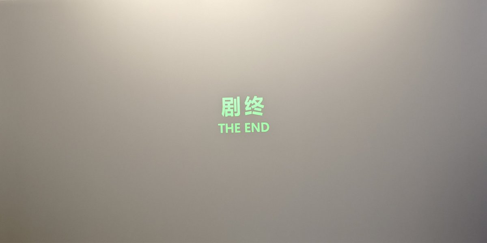

结尾确实很童话了，我以为女主最后会回日本，在香港的经历就真的像她说得是一场梦一样，她填补了自己的遗憾然后开始新的生活；男主或许会等，或许不会等——怎么感觉像王家卫看多了一样。
没想到女主回了日本竟然又回香港找男主了，故事一下子就魔幻起来了（不是），但是真好啊……真好。

没想到女主回了日本竟然又回香港找男主了，故事一下子就魔幻起来了（不是），但是真好啊……真好。

甲鱼不正经影评25
《星月童话》
替身文学，女主未婚夫本来打算带她去香港却出车祸去世了，女主独自来到香港遇到了和自己未婚夫长得一样的男主。
我觉得替身文学最好品的地方在于：你看着我的时候，眼里到底是我还是谁，你说的那些是对我还是对另一个人，如果没有ta你还会爱上我吗……
#甲鱼不正经影评 https://t.co/1BWliel14h
《星月童话》
替身文学，女主未婚夫本来打算带她去香港却出车祸去世了，女主独自来到香港遇到了和自己未婚夫长得一样的男主。
我觉得替身文学最好品的地方在于：你看着我的时候，眼里到底是我还是谁，你说的那些是对我还是对另一个人，如果没有ta你还会爱上我吗……
#甲鱼不正经影评 https://t.co/1BWliel14h